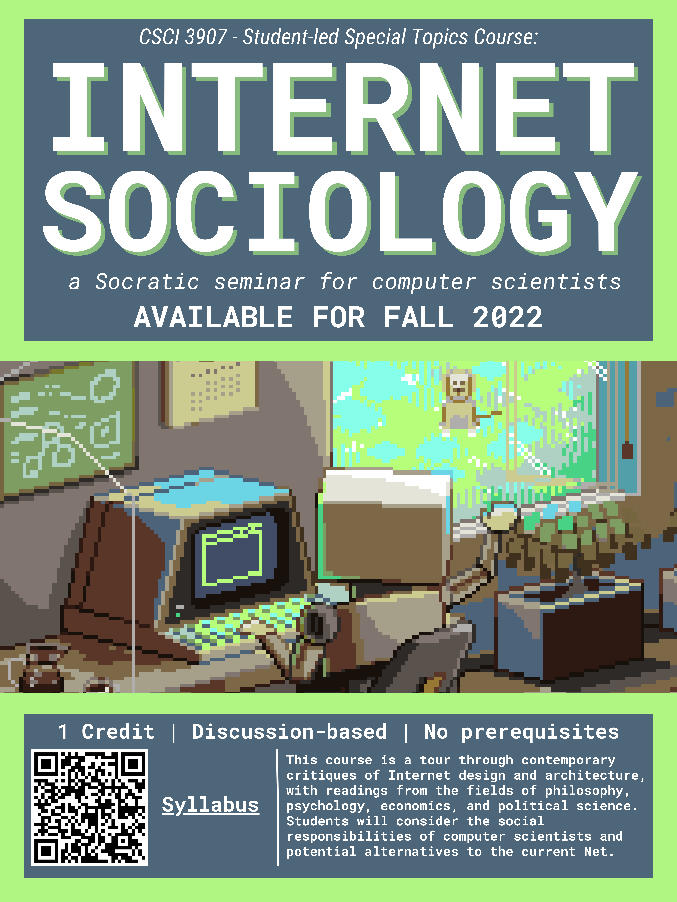

Hi! I'm Grady.
I am a Master's student at The George Washington University studying computer science, expecting to complete the degree in May 2023. In May 2022 I received a B.S. in computer science from The George Washington University's Honors Program.
My current CS interests reside in the subdomains of Artificial Intelligence and Human-Computer Interaction. Outside of computers I enjoy running and reading.
The best way to reach me is my email address: gradymcpeak@gwu.edu.
Research
I am employing Machine Learning and Natural Language Processing techniques to develop new features for Command-Line Interfaces (CLIs) in order to make them easier for users to learn and become comfortable with. These features include autocorrect, predictive text, and a system for recommending relevant commands to users based on their own unique questions. My work is being advised by Dr. Kinga Dobolyi.
You can view my GitHub profile here.
Publications
G McPeak. "Improving BERT Classification Performance on Short Queries About UNIX Commands Using an Additional Round of Fine-Tuning on Related Data." To be published in Proceedings of 16th IEEE International Conference on Application of Information and Communication Technologies, 2022. Link forthcoming.
Teaching
I have been serving as an Undergraduate Teaching Assistant for the past 4 semesters. I have worked on the following courses:
- CSCI 1112: Data Structures and Algorithms (Spring '22)
- CSCI 1012: Intro to Programming in Python (Fall + Spring '20, Fall '21)
Before this, I served as a Learning Assistant for CSCI 1012 for 2 semesters.
In Fall 2022, I will be co-teaching an original 1-credit elective with a fellow student, titled Internet Sociology. The course is a discussion-based seminar on contemporary critiques of Internet software design and architecture, with readings from scholars in the fields of computer science, philosophy, cognitive psychology, economics, and political science.
The syllabus can be viewed here.
Copyright Grady McPeak 2022.